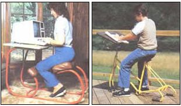
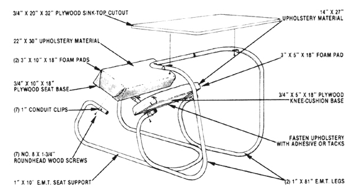

Better "sitting posture- can take a lot of the backache out of those long work hours.
MOTHER's research into pedal-driven vehicles has, understandably enough, left our shop cluttered with surplus bike frames and parts. The bicycle desk you see here was assembled from those -leftovers". By welding a spare set of dropped handlebars to the rear-axle dropouts of a bike frame, then reversing the existing bars and mounting a writing I platform with conduit clips, you can make a one-of-a-kind outdoor study station that can be adjusted-just like a bicycle?to fit the "wrider".
If a good part of your day is spent sitting, chances are you know how fatiguing that so-called"rest" position can be. And despite the fact that chairs of all types have been designed over the years to suit specific needs, none that we know of have successfully addressed the fundamental problem of encouraging ideal posture ... until recently.
We're referring, of course, to the backless stools you've probably seen displayed in current popular magazines. Consisting of just a seat and two knee supports, these chairs are said to ease breathing, encourage circulation, and improve posture ... all by virtue of the fact that they force the user to sit upright with his or her thighs slanting toward the floor, thus loosening the cramped angle at the waist that results from sitting in a conventional chair.
As you might expect, these well-finished pieces of furniture are expensive ... some costing nearly $200. But by following our design (using inexpensive materials and, for the most part, a few basic tools), you can make your own "posture platform" that-though it won't be the same as the ready-made chairs-is actually a tad more versatile, because it's a desk-and-seat combination.
To start, you'll need these materials: a piece of 3/4" plywood measuring 15" X 18" to make the foundations for the seat and the knee pad ... a second section of 3/4" plywood that's 20" X 32" for the desk surface (if you don't mind searching for a bargain, sink-top
cutouts are usually available-from cabinet shops, lumberyards, or even local flea markets?at scrap prices, and they're already surfaced with a laminate) ... a 3" X 18" X 25" hunk of foam rubber padding ... a 30" X 36" length of upholstery material . , . some fabric adhesive (you could use tacks or staples to secure the covering instead) ... seven 1 " conduit clips ... an equal number of No. 8 X 1-3/4" roundhead wood screws ... and three I 10-foot lengths of 1 " electrical metallic tubing (E.M.T.).
Once you've collected all of these items, you can begin forming the desk's conduit base. (To do the job neatly, you'll need to buy or borrow a I" conduit bender, since the support's arcs should be accurately shaped and symmetrical.) The large platform is to be braced by two legs, each of which is the mirror image of the other. Start at a point 3 inches from one end of a complete section of conduit, and form an acute-angle bend that absorbs 16" of material (this will eventually support the knee pad). Then leave a 5" straight section, and make a second arc-this one 90* and 12" long-that's offset from the plane of the first by 151 or so. The third bend, beginning after a straight stretch of 14", should consume about 12" of tubing and describe a 950 angle, and-after only an inch-the final (90") arc should be formed perpendicularly to the third.
Naturally, the opposite leg should be formed to the same dimensions, and must match its mate ... then the two butting ends can be trimmed so that the legs' upper (desk-supporting) siderails are 27 inches apart, while the lower rails should be separated by a distance of approximately 14 inches.
To shape the tubular seat support, take your final length of conduit and find its center. Then form-to the right and left of this point-similar structures, each with the following references: a 12" right-angle arc followed by an 18" straight section ... a 12" 115° bend that's perpendicular to the initial curve ... 4" of unbent stock ... an 850 arc 10 in length ... and, finally, about 4" of straight stub.
When you've shaped the conduit, you can go to work on the seat and cushion. Cut your smaller slab of plywood into two pieces -one 3/4" X 5" X 18", and the other 3/4" X 10" X 18"?then slice the foam padding to match those boards (the 10" X 18" seat will require two layers of cushioning). Round the corners of the plywood platforms, glue the foam sections to their respective bases, and-while the adhesive is drying-trim your upholstery material to fit the pads. (The seat will require a 22" X 30" piece, and the knee cushion a 14" X 27" section.)
Rather than get involved with intricate stitching, we used a simple tuck-and-fold technique when securing the fabric. Each cushion's end flaps were fastened to the bottom of the base first, then the longer side skirts were folded inward and secured, with the corners tucked beneath them (the process was similar to wrapping a package).
With this done, you can test the fit of the various parts before completing the assembly process. Start by clamping the "nose" of the seat frame against the heels of the knee-support frame (see the diagram), then temporarily setting the two pads in place. Once the conduit clips are fastened to the cushion bases at the proper locations (the clamps make the pads adjustable), the tabletop can be positioned as well.
If you're satisfied with the fit, you can remove the cushions and tack-weld or braze the clamped joints and the butted joint at the top of the frame, then finish up by painting the conduit. If the position's not comfortable, use your E.M.T. bender to adjust the arcs to suit the desk to your body, then complete the joints, painting, and the final assembly. The result will be a unique piece of furniture that's comfortable and functional ... for a very reasonable $25 or so.
|
 |
 |
|